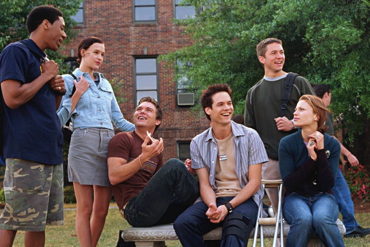
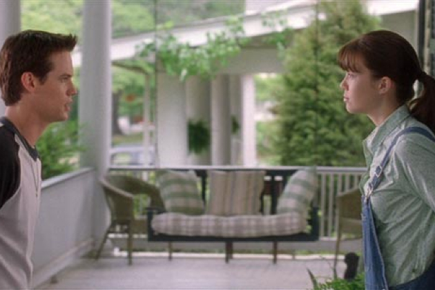

"A Walk to Remember" is a romantic drama based on the novel by Nicholas Sparks. The story is set in a small town in North Carolina during the late 1990s and revolves around the lives of two high school seniors, Landon Carter and Jamie Sullivan. Landon is a popular and rebellious student, while Jamie is a devoutly religious and compassionate girl who is often ridiculed by her peers.
Their lives intersect when Landon becomes involved in a prank gone wrong, leading to community service and participation in the school play, where Jamie is also cast. As they spend more time together, Landon begins to see Jamie in a new light, discovering her inner beauty, wisdom, and depth of character. Despite their differences, they develop a deep and genuine connection, leading to a transformative romance.
However, their relationship faces challenges when Jamie reveals a heartbreaking secret about her health. As they navigate the difficulties together, Landon learns important lessons about love, forgiveness, and the true meaning of faith. "A Walk to Remember" is a poignant tale of love and loss, showcasing the power of unconditional love and the impact one person can have on another's life.
"A Walk to Remember" follows Landon Carter, a rebellious high school senior in a small North Carolina town, whose life takes a transformative turn when he meets Jamie Sullivan, a kind-hearted and religious girl ostracized by her peers. Despite their differences, they form a deep connection as Landon gets to know Jamie's inner strength and unwavering faith. Their relationship blossoms into a heartfelt romance, but it is overshadowed by Jamie's revelation that she is battling leukemia, a terminal illness. This revelation challenges Landon to confront his own beliefs and priorities, leading to profound personal growth and a reevaluation of his outlook on life.
Themes in the novel include the transformative power of love and the importance of faith and belief in overcoming adversity. Jamie's strong faith influences both her and Landon, prompting him to become a better person as he learns to love unconditionally and accept Jamie despite societal judgments. The novel also explores themes of personal growth and redemption, as Landon evolves from a rebellious teenager into a compassionate and understanding young man. Ultimately, "A Walk to Remember" is a poignant exploration of love, faith, forgiveness, and the impact of relationships on shaping one's character and perspective on life.
In "A Walk to Remember," directed by Adam Shankman and based on Nicholas Sparks' novel, the visual and cinematographic elements are crucial in conveying the emotional depth and nostalgic charm of the story. Set in a small coastal town in North Carolina, the film captures the quaintness and intimacy of its settings, reflecting the simplicity and warmth of the characters' lives. The cinematography utilizes soft lighting and natural landscapes to create a romantic atmosphere that enhances the emotional intensity of the narrative.
Visual motifs such as close-up shots emphasize the characters' emotions and interactions, particularly between Landon Carter and Jamie Sullivan, as their relationship evolves from initial skepticism to profound love. These visual choices not only enrich the storytelling but also immerse viewers in the intimate and emotional journey of the characters, highlighting themes of love, faith, and personal transformation. Overall, the visual and cinematographic elements in "A Walk to Remember" contribute significantly to its heartfelt portrayal of love overcoming adversity and the enduring power of faith.
"A Walk to Remember," the 2002 film adaptation directed by Adam Shankman, utilized several key shooting locations to capture the story's Southern small-town charm and coastal beauty:
Wilmington, Carolina: This location provided the setting for the school where Landon Carter, Jamie Sullivan, and their classmates interacted throughout the film. The school's campus and facilities were used to depict various indoor and outdoor scenes crucial to the storyline, including classrooms, hallways, and the school theater where significant moments in the characters' lives unfold.
Wilmington, North Carolina:Jamie Sullivan's house was filmed at a private residence located in Southport, North Carolina. This location served as the exterior setting for Jamie's home, where several important scenes take place, including moments between Jamie and Landon as their relationship develops. The house's cozy and inviting appearance reflects Jamie's character and her close-knit family life, providing a fitting backdrop for the heartfelt moments shared between the characters in the film.
Southport, North Carolina: This location served as the setting for the church where Jamie Sullivan's father, Reverend Hegbert Sullivan, presided as the minister. The church's quaint and traditional architecture provided a serene and authentic backdrop for the film's pivotal scenes, including moments of reflection, prayer, and community gatherings. St. Philips Episcopal Church added to the film's portrayal of Jamie's strong faith and the importance of spirituality in her life, contributing to the overall atmosphere of the story's small-town setting in North Carolina."
Wilmington, North Carolina:The theater's ornate architecture and stage served as a fitting backdrop for the emotional and transformative scenes depicted in the film, including Landon's realization of his feelings for Jamie and their evolving relationship. Thalian Hall's historic charm and theatrical ambiance added depth and authenticity to the portrayal of the characters' experiences in "A Walk to Remember."
"A Walk to Remember" concludes with Landon Carter's transformative journey alongside Jamie Sullivan, a girl battling leukemia in a small North Carolina town. Their unexpected love teaches Landon about forgiveness, redemption, and the power of selfless devotion. Jamie's unwavering faith and kindness leave a lasting impact on Landon, highlighting the profound influence of love and the importance of cherishing meaningful connections, even in the face of adversity.